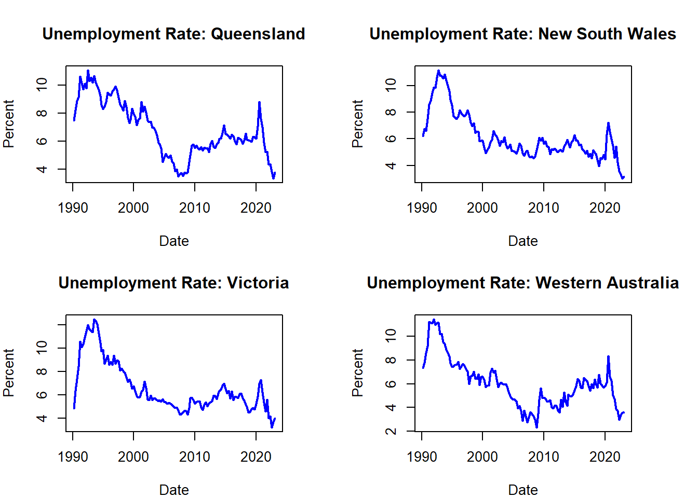
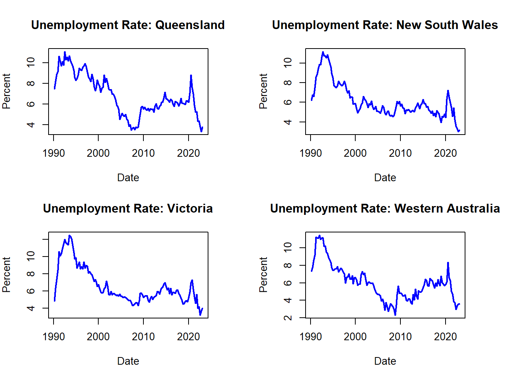
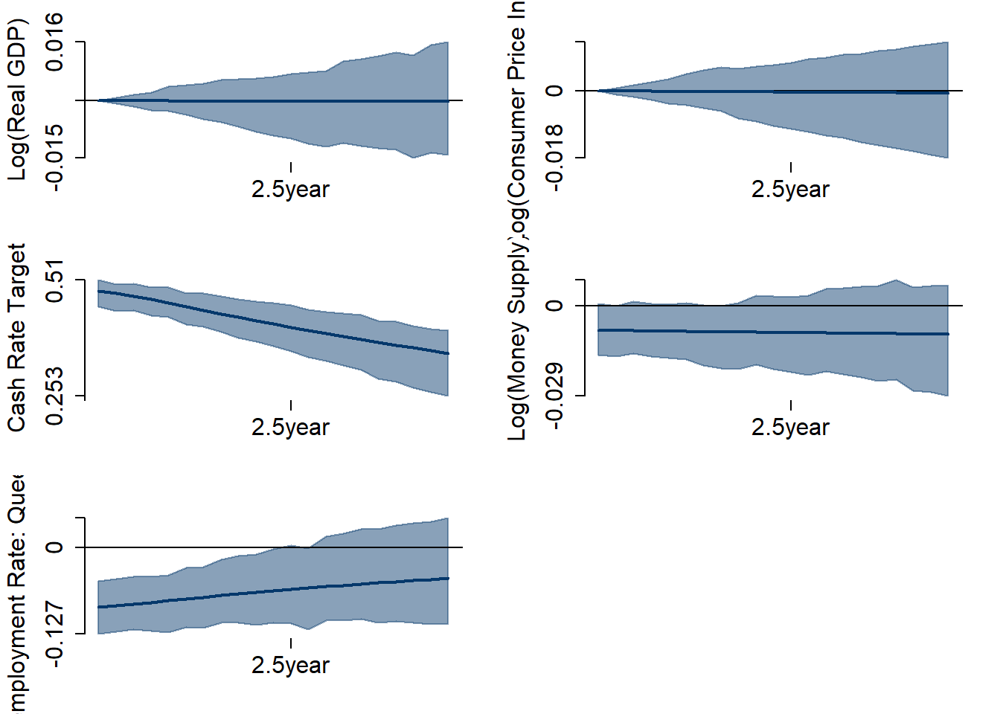
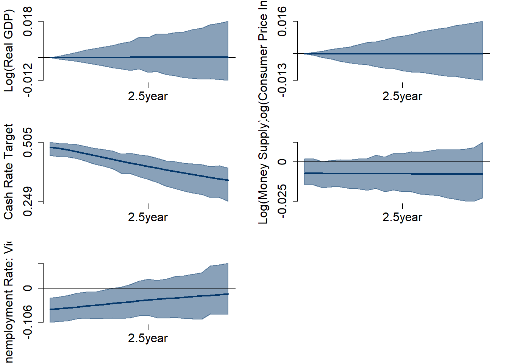
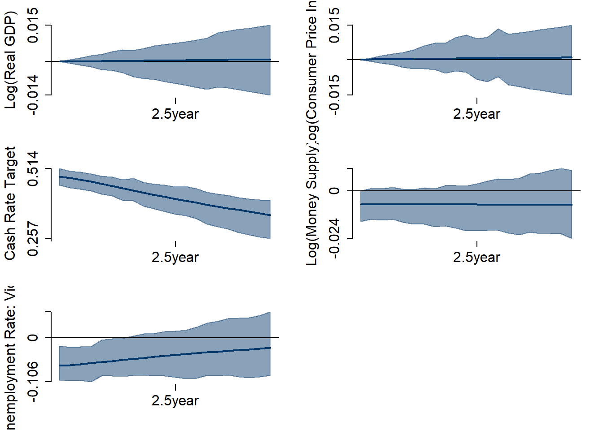
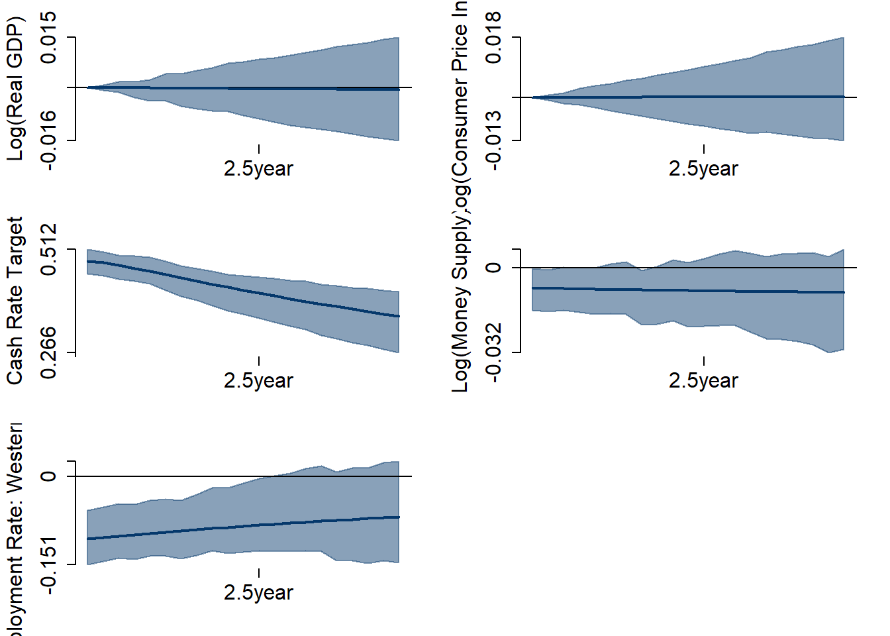
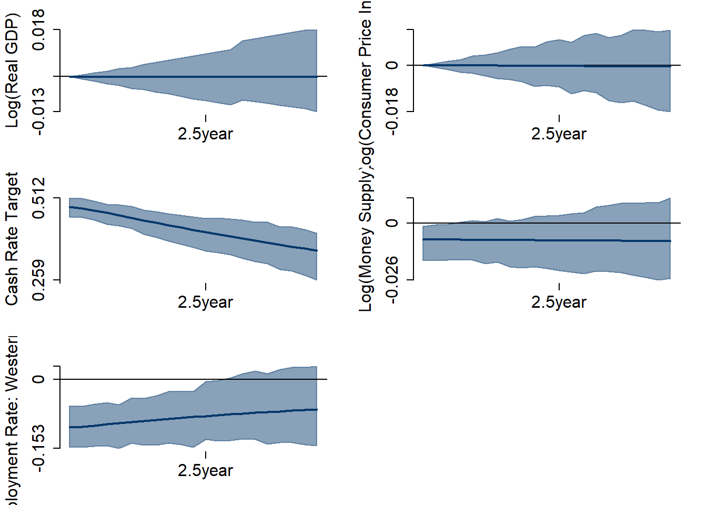

Abstract. Using data from the Australian Bureau of Statistics, this paper attempts to understand how changes in monetary policy impact unemployment levels in different Australian states using a Structural Vector Autoregression (SVAR) approach.
Keywords. Monetary policy, Unemployement, Regional Effects, Impluse Response Function, Structural Vector Autoregressions, Australia
Intro in progress
The data required can be taken directly from either the Australian Bureau of Statistics or the Royal Bank of Australia, who, together, provide the required data from 1990 to 2022 on real GDP, the Cash Rate Target, Money Supply, the Consumer Price Index, and the state-specific unemployment rate for Queensland, New South Wales, Victoria, and Western Australia. Logs have been taken of real GDP, Money Supply, and the Consumer Price Index.
Below are plots of each of the variables over time. There are clear trends in the data, and it is clear that the unemployment rates in each of the states are closely linked.

Below are the ACF and PACF plots for each of the variables. These show the memory properties of the data. Each pair of plots have similar shapes with the ACFs showing a strong positive, gradually decaying pattern, while the PACFs are all insignificant after the first lag. This suggests that many or all of the variables are likely to follow a random walk with drift process.
ACF plots-1.png)
ACF plots-2.png)
ACF plots-3.png)
ACF plots-4.png)
Dickey-Fuller tests were run on each of the variables to determine the integration order, results are below. All of the variables have a single unit-root except for the Cash Rate Target. This matches the interpretation from the ACF and PACF plots.
This paper utilizes the following Bayesian SVAR model to capture the dynamics between the variables.
\[\begin{align} B_0 Y_t = b_0 + B_1 y_{t-1} +\dots +B_p y_{t-p} + u_t \end{align}\] \[\begin{align} u_t|Y_{t-1}~iid(0_N,I_N) \end{align}\]
Where:
\(Y_{t}\) is an \(N\times 1\) vector of endogenous variables described above.
\(B_0\) is an \(N \times N\) structural matrix capturing contemporaneous relationships between variables.
\(u_t\) is an \(N\times 1\) vector of independent structural shocks, conditional on \(Y_{t-1}\).
The estimation of this model and subsequent calculation of the impulse response functions is the primary analysis in this paper.
The structural form model can be represented in it’s reduced form by:
\[\begin{align} \ y_t &= \mu_0 + A_1 y_{t-1} + \dots + A_p y_{t-p} + \varepsilon_t\\ \end{align}\] \[\begin{align} \ \varepsilon_t| Y_{t-1} \sim _{iid} ( 0, \Sigma)\\ \end{align}\] \[\begin{align} \Sigma &= B_0^{-1}B_0^{-1'}\\ \end{align}\]
Presenting the likelihood function as a normal-inverse Wishart distribution for \((A,\Sigma)\) using matrix notation, we have:
\[\begin{gather} Y = XA + E \\ \\ E|X \sim MN_{T \times N}(0_{T \times N},\Sigma,I_T) \end{gather}\]
\[\begin{gather} L(A,\Sigma|Y,X) \propto det(\Sigma)^{-\frac{T}{2}} exp \left\{-\frac{1}{2} tr \left[ \Sigma^{-1}(Y-XA)'(Y-XA) \right] \right\} \\ \\ = det(\Sigma)^{-\frac{T}{2}} exp \left\{-\frac{1}{2} tr \left[ \Sigma^{-1}(A-\hat{A})'X'X(A-\hat{A}) \right] \right\} exp \left\{-\frac{1}{2} tr \left[\Sigma^{-1}(Y-X \hat{A})'(Y-X \hat{A}) \right] \right\} \\ \end{gather}\]
where:
\[Y_t=\begin{pmatrix} GDP_t &= \text{Real GDP} \\ CPI_t &= \text{Consumer Price Index} \\ CRT_p &= \text{Cash Rate Target GDP} \\ M1_t &= \text{Money Supply} \\ UR_t &= \text{State Specific Unemployment Rate} \end{pmatrix}\]
\[\begin{gather} \hat{A} = (X'X)^{-1}X'Y \end{gather}\]
Hence:
\[\begin{gather} L(A,\Sigma|Y,X) = NIW_{K\times N}(\hat{A}, (X'X)^{-1},(Y-X\hat{A})'(Y-X\hat{A}), T-N-K) \end{gather}\]
This leads to joint prior distribution for \((A, \Sigma)\) of the same form:
\[\begin{gather} p(A,\Sigma) = p(A|\Sigma) p(\Sigma) \\ A|\Sigma \sim MN_{K \times N} (\underline{A}, \Sigma , \underline{V}) \\ \Sigma \sim IW_{N}(\underline{S},\underline{\nu}) \end{gather}\]
The full conditional posterior is, therefore, given by:
\[\begin{gather} p(A,\Sigma |Y, X) = p(A|Y, X, \Sigma) p(\Sigma|Y,X) \\ p(A|Y,X,\Sigma) = MN_{K \times N} (\bar{A}, \Sigma , \bar{V}) \\ p(\Sigma|Y, X) = IW_{N}(\bar{S},\bar{\nu}) \end{gather}\]
with parameters:
\[\begin{gather} \bar{V} = (X^{'}X+ \underline{V}^{-1})^{-1} \\ \\ \bar{A} = \bar{V}(X^{'}Y+\underline{V}^{-1} \underline{A}) \\ \\ \bar{\nu} = T + \underline{\nu} \\ \\ \bar{S} = \underline{S} + Y^{'}Y + \underline{A}^{'}\underline{V}^{-1}\underline{A} - \bar{A}^{'}\bar{V}^{-1}\bar{A} \end{gather}\]
The following function uses the Minnesota prior to set priors for \(V\), \(A\), \(\nu,\) and \(S\)
calc.priors <- function(p, X, Y){
A.hat = solve(t(X)%*%X)%*%(t(X)%*%Y)
Sigma.hat = diag(ncol(Y))
N = ncol(Y)
#Setting Kappas
kappa.1 <- 0.02^2
kappa.2 <-100
K = 1 + (p*N)
A.prior = matrix(0,nrow(A.hat),ncol(A.hat))
A.prior[2:(N+1),] = diag(N)
V.prior = diag(c(kappa.2,kappa.1*((1:p)^(-2))%x%rep(1,N)))
S.prior = diag(diag(Sigma.hat))
nu.prior = N+1
priors <- list(A.prior = A.prior , V.prior=V.prior, S.prior=S.prior, nu.prior=nu.prior)
return(priors)
}Using these priors and the function below, we can calculate posteriors \(A\), \(B\), and \(\Sigma\)
calc.posteriors <- function (p, S, X, Y, priors){
N = ncol(Y)
A.prior <- priors$A.prior
V.prior <- priors$V.prior
S.prior <- priors$S.prior
nu.prior <- priors$nu.prior
V.bar.inv = (t(X)%*%X) + diag(1/diag(V.prior))
V.bar = solve(V.bar.inv)
A.bar = V.bar%*%(t(X)%*%Y + diag(1/diag(V.prior))%*%A.prior)
nu.bar = nrow(Y) + nu.prior
S.bar = S.prior + t(Y)%*%Y + t(A.prior)%*%diag(1/diag(V.prior))%*%A.prior - t(A.bar)%*%V.bar.inv%*%A.bar
S.bar.inv = solve(S.bar)
Sigma.posterior.inv = rWishart(S, df=nu.bar, Sigma=S.bar.inv)
Sigma.posterior = apply(Sigma.posterior.inv,3,solve)
Sigma.posterior = array(Sigma.posterior,c(N,N,S))
A.posterior = array(rnorm(prod(c(dim(A.bar),S))),c(dim(A.bar),S))
L = t(chol(V.bar))
B.posterior = array(NA, c(N,N,S))
B1.posterior = array(NA,c(N,(1+N*p),S))
for (s in 1:S){
chol.sigma = chol(Sigma.posterior[,,s])
A.posterior[,,s]= A.bar + L%*%A.posterior[,,s]%*%chol.sigma
B.posterior[,,s]= t(chol.sigma)
B1.posterior[,,s]= B.posterior[,,s]%*%t(A.posterior[,,s])
}
posterior = list(A.posterior = A.posterior, B.posterior = B.posterior, Sigma.posterior = Sigma.posterior, B1.posterior = B1.posterior)
return(posterior)
}To extend the model I augment the system using the ‘sum of coefficients’ and ‘dummy initial observation’ prior. The sum of coefficients prior takes the average of the lagged values and adds them to the basic equation. This is because these values are assumed to be a good forecast of future observations.
The ‘dummy initial observation’ prior adds a single dummy observation such that all values are set equal to the averages of initial conditions, up to a scaling factor.
In order to practically generate the additional rows the following steps should be taken.
Firstly the average of lagged values needs to be calculated, \(y.bar\). This is done by finding the mean of the first \(p\) values in the data. Next, values of of the scaling factors need to be selected, typically, as I have done, values equal to 1 are chosen.
Once this has been done, the rows can be created. The fine details of how this is done can be found in Carriero and Clark (2013).
prior.ex <- function(data, p, lambda_3 = 1, lambda_4 = 1){
N = ncol(data)
M = (N*p)+1
in.obvs.Y <- matrix(data[1:p,], ncol = N)
y.bar = colMeans(in.obvs.Y)
Y_star = rbind(diag(y.bar)/lambda_3, y.bar/lambda_4)
X_star = as.matrix(c(rep(0, N), 1/lambda_4))
for (i in 1:p) {
X_star = cbind(Y_star, X_star)
}
ext.data <- list(YN = Y_star, XN = X_star)
return(ext.data)
}The above functions are tested using data containing 1000 observations simulated from a bi-variate Gaussian random walk process with the covariance matrix equal to the identity matrix of order 2. The results from this are very close to the true parameters of the model, and thus the basic and extended models are both working as intended.
#Basic Model Test
y = apply(matrix(rnorm(2000), ncol = 2), 2, cumsum)
Y = y[2:1000,]
X = cbind(1, y[1:999,])
S = 1000
priors = calc.priors(p = 1, X = X, Y = Y)
posteriors = calc.posteriors(p = 1, S = 1000, X = X, Y= Y, priors)A.posterior:
[,1] [,2]
[1,] -0.108 0.245
[2,] 0.995 -0.002
[3,] 0.002 0.997B.posterior:
[,1] [,2]
[1,] 1.020 0.000
[2,] -0.065 1.014Sigma.posterior:
[,1] [,2]
[1,] 1.041 -0.066
[2,] -0.066 1.035##Extended model Test
inital.dum = prior.ex(y, p = 1)
XN <- inital.dum$XN
YN <- inital.dum$YN
X.ex <- rbind(XN, X)
Y.ex <- rbind(YN, Y)
priors.ext = calc.priors(p = 1, X = X.ex, Y = Y.ex)
posteriors.ext = calc.posteriors(p= 1, S = 1000, X = X.ex,Y=Y.ex, priors = priors.ext)A.posterior:
[,1] [,2]
[1,] -0.105 0.242
[2,] 0.995 -0.002
[3,] 0.002 0.997B.posterior:
[,1] [,2]
[1,] 1.019 0.000
[2,] -0.063 1.012Sigma.posterior:
[,1] [,2]
[1,] 1.0392 -0.0646
[2,] -0.0646 1.0289Below are the impulse response functions for each of the different systems resulting from a shock to the cash rate target, representing a change in monetary policy. For each system there are two sets of IRFs, the first is calculated using the basic model, the second uses the extended model.







Each of the impulse response functions show how variables react to a shock to the cash rate target. There are eight different systems, a basic and extended model for each of the key Australian states. There are no noticeable differences in the shapes or characteristics of the IRFs between the basic and extended models in any of the states.
The goal of this paper is to find how different states react to changes in monetary policy. Interestingly, the effect of a positive shock to the cash rate target appears lead to a short term drop unemployment levels in every state with the impact decreasing over time. The magnitude of the effect on unemployment is most obvious difference between states. In Western Australia a shock to the cash rate drops unemployment by 0.1068 initially which slowly increases back to its initial value, however not reaching it within 5 years. In New South Wales, the drop is much greater, at 0.1405, while Victoria’s drop is only 0.0657, and Queensland’s is 0.0899. There are clear differences between each state, with a monetary policy shock affecting New South Wales the most and Victoria the least. This is highly unexpected and likely means there are issues with the estimation strategy.